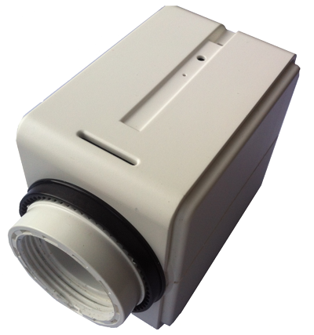
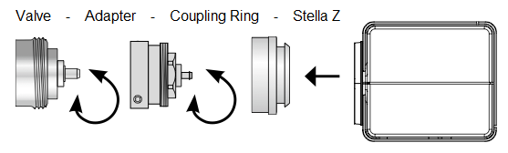

EUR_STELLAZ
Firmware Version : 0.4 |
 |
Quick Start
S This device is a wireless sensor. All operation is performed using the little button behind the round hole in the enclosure. Please use the tool provided to operate the button. Pushing the button for 2.5 seconds will turn the device into install mode where the valve control is moved into end position to allows installation of the device. Pushing the button for 5 seconds will confirm inclusion or exclusion of the device. A single click wakes up the device when sleeping.
Attention: You must apply the device to the valve before applying any wireless setups and actions. Without the back pressure from the valve the device will turn into error mode. in This mode no wireless operation is performed.
Please refer to the chapters below for detailed information about all aspects of the products usage.
What is Z-Wave?
This device is equipped with wireless communication complying to the Z-Wave standard. Z-Wave is the international standard for wireless communication in smart homes and buildings. It is using the frequency of 868.42 MHz to realize a very stable and secure communication. Each message is reconfirmed (two-way communication) and every mains powered node can act as a repeater for other nodes (meshed network) in case the receiver is not in direct wireless range of the transmitter.
Z-Wave differentiates between Controllers and Slaves. Slaves are either sensors (S) transmitting metered or measured data or actuators (A) capable to execute an action. Controllers are either static mains powered controllers (C) also referred to as gateways or mobile battery operated remote controls (R). This results in a number of possible communication patterns within a Z-Wave network that are partly or completely supported by a specific device.

- Controllers control actuators
- Actuators report change of status back to controller
- Sensors report change of status of measured values to controller
- Sensors directly control actuators
- Actuators control other actuators
- Remote controls send signals to static controllers to trigger scenes or other actions
- Remote controls control other actuators.
There are two different role a controller can have. There is always one single primary controller that is managing the network and including/excluding devices. The controller may have other functions - like control buttons - as well. All other controllers don't manage the network itself but can control other devices. They are called secondary controllers. The image also shows that its not possible to operate a sensor just from a remote control. Sensors only communicate with static controllers.
Product description
StellaZ is a wireless Thermostat Valve Control capable controlling heating, air ventilation and climate control units. Sensors, control and actuator are combined in one single device allowing stand alone energy efficient room control.The device can run in four different operation modes (Off, Energy Saving, Comfort, Direct Control) to control the temperature. The room temperature can also be reported by the device. Open windows will be recognized and lead to a lower control temperature for 20 minutes to prevent waste of energy. Further functions of StellaZ are:
- Very high precision, valve speed only 3s/mm, low noise, max. valve distance: 4 mm.
- Connection to Valve: M 30 x 1,5, Adapters for other valve types available (e.g. Heimeier, Danfoss, Honeywell Braukmann, Honeywell MNG, Oventrop from 1996 on) are part of scope of delivery.
- Protected installation, removal only possible with special tool provided as part of scope of delivery.
Batteries
The unit is operated by batteries. Use only batteries of correct type. Never mix old and new batteries in the same device. Used batteries contain hazardous substances and should not be disposed of with household waste!
Battery Type: 2 * AA
Installation Guidelines
Installation

The installation of the valve control is easy with any dirt of loss of water since the heating pipe system will not be
interrupted.
- If needed select an adapter and mount this adapter to the valve.
- Insert Batteries. Pushing the little button behind the round hole for 2.5 seconds turns the device into the install mode. In this mode the valve actuator is moved into the inner end position to simplify the installation of the device.
- Continous pushing of the button starts the calibration function. The both end position of the valve will be detected automatically. Without further operation of the button this calibration wil starts automatically after 3 minutes. the devices will go into sleep state after finisheding the calibration.
- Turn the white coupling ring onto the the valve resp. the adapter.
- Push StellaZ to the white coupling ring until you hear is snapping in.
Attention: You must apply the device to the valve before applying any wireless setups and actions. Without the back pressure from the valve the device will turn into error mode.
Deinstallation
- Push both pins of the demounting tool into the two holes on the enclosure.
- Remove Stella Z from the adapter or valve.
Behavior within the Z-Wave network
I On factory default the device does not belong to any Z-Wave network. The device needs to join an existing wireless network to communicate with the devices of this network. This process is called Inclusion. Devices can also leave a network. This process is called Exclusion. Both processes are initiated by the primary controller of the Z-Wave network. This controller will be turned into exclusion respective inclusion mode. Please refer to your primary controllers manual on how to turn your controller into inclusion or exclusion mode. Only if the primary controller is in inclusion or exclusion mode, this device can join or leave the network. Leaving the network - i.e. being excluded - sets the device back to factory default.
If the device already belongs to a network, follow the exclusion process before including it in your network. Otherwise inclusion of this device will fail. If the controller being included was a primary controller, it has to be reset first.
Pressing the button behind the round hole in the enclosure for 5 sec. will confirm inclusion and exclusion. Right after inserting the battery the device will stay in the auto inclusion mode for 3 minutes. In this mode a controller in inclusion mode can include the device without any further manual confirmation on the device.
Operating the device
The device does not allow any local operation on the device itself but control via Z-Wave radio from a Z-wave controller only. The thermostat has four operating modes. They are switched wirelessly as well:
- Frost Protection: The temperature in the room will be regulated to about 6 °C.
- Comfort: The temperature in the room will be regulated to a comfortable level. On factory default this is 22 °C but the value can be adjusted by the respective Z-Wave command 'Thermostat Setpoint' to a value between 0 °C and 50 °C. This mode is active on factory default.
- Energy Saving: The temperature in the room will be regulated to a energy saving level. On factory default this is 18 °C but the value can be adjusted by the respective Z-Wave command 'Thermostat Setpoint' to a value between 0 °C and 50 °C.
- Direct Valve Control: This mode allows the direct control of the valve as percentage value of opening using the Z-Wave command class 'Switch Multilevel'. The regulation of a temperature within the device is deactivated.
Additionally to regulating the temperature the valve control is reporting the measured temperature on request (using the command class 'Sensor Multilevel' implementing communication pattern 3). It may happen that the reported temperature will remain 0 °C for some minutes due to calibration. After the first regular wakeup the temperature value will however be correct. Switching between the four modes is accomplished using the Z-Wave command classes 'Thermostat Mode' and 'Basic'. The following mappings apply:
- Frost Protection: BASIC SET 0x01, THERMOSTAT MODE SET 0x00
- Energy Saving: BASIC SET 0x00, THERMOSTAT MODE SET 0x0b
- Comfort: BASIC SET 0xff, THERMOSTAT MODE SET 0x01
- Direct Control: BASIC SET 0xfe, THERMOSTAT MODE SET 0x1f
Wakeup Intervals - how to communicate with the device?
W This device is battery operated and turned into deep sleep state most of the time to save battery life time. Communication with the device is limited. In order to communicate with the device, a static controller C is needed in the network. This controller will maintain a mailbox for the battery operated devices and store commands that can not be received during deep sleep state. Without such a controller, communication may become impossible and/or the battery life time is significantly decreased.
This device will wakeup regularly and announce the wakeup state by sending out a so called Wakeup Notification. The controller can then empty the mailbox. Therefore, the device needs to be configured with the desired wakeup interval and the node ID of the controller. If the device was included by a static controller this controller will usually perform all necessary configurations. The wakeup interval is a tradeoff between maximal battery life time and the desired responses of the device.
One Click on the button behind the round hole in the enclosure will wakeup the device and keeps it awake for 5 seconds. The wakeup interval can be defined between 4 minutes and 180 day in steps of 4 minutes. The factory default value is 7 days.
It is possible to set the node ID to 255 to send wakeup notifications as broadcast. In this mode device takes more time to go to sleep and drains battery faster, but can notify all it's direct neighbors about a wakeup.
Node Information Frame
NI The Node Information Frame is the business card of a Z-Wave device. It contains information about the device type and the technical capabilities. The inclusion and exclusion of the device is confirmed by sending out a Node Information Frame. Beside this it may be needed for certain network operations to send out a Node Information Frame.
A single click on the button behind the round hole in the enclosure sends out a Node Information Frame.
LED Control
- Z-Wave OK: 2 Seconds Green
- Z-Wave Error: 2 Seconds Red
- Network Wide Inclusion: blinking Red-Green
- Installer-Mode: blinking green
- Internal Error: blinking red
Command Classes
Supported Command Classes- Basic (version 1)
- Thermostat Mode (version 3)
- Thermostat Setpoint (version 3)
- Wake Up (version 2)
- Version (version 1)
- Multilevel Switch (version 3)
- Battery (version 1)
- Multilevel Sensor (version 4)
- Manufacturer Specific (version 1)
- Node Naming and Location (version 1)
Technical Data
| IP Rating | IP 20 |
| Battery Type | 2 * AA |
| Explorer Frame Support | Yes |
| SDK | 4.54 pl1 |
| Device Type | Slave with routing capabilities |
| Generic Device Class | Thermostat |
| Specific Device Class | Thermostat General V2 |
| Routing | No |
| FLiRS | No |
| Firmware Version | 0.4 |
Explanation of Z-Wave specific terms
- Controller — is a Z-Wave device with capabilities to manage the network. Controllers are typically Gateways, Remote Controls or battery operated wall controllers.
- Slave — is a Z-Wave device without capabilities to manage the network. Slaves can be sensors, actuators and even remote controls.
- Primary Controller — is the central organizer of the network. It must be a controller. There can be only one primary controller in a Z-Wave network.
- Inclusion — is the process of bringing new Z-Wave devices into a network.
- Exclusion — is the process of removing Z-Wave devices from the network.
- Association — is a control relationship between a controlling device and a controlled device.
- Wakeup Notification — is a special wireless message issued by a Z-Wave device to annonces that is is able to communicate.
- Node Information Frame — is a special wireless message issued by a Z_Wave device to announce its capabilities and functions.
Disposal Guidelines
The product contains batteries. Please remove the batteries when the device is not used.
Do not dispose of electrical appliances as unsorted municipal waste, use separate collection facilities. Contact your local government for information regarding the collection systems available. If electrical appliances are disposed of in landfills or dumps, hazardous substances can leak into the groundwater and get into the food chain, damaging your health and well-being.